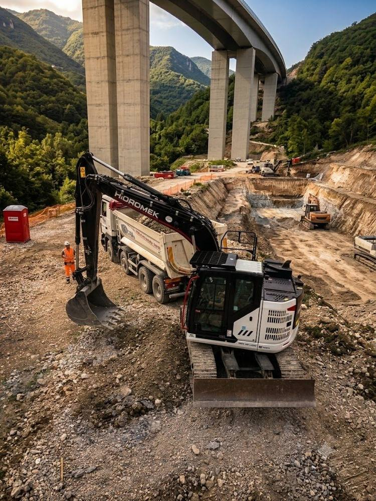
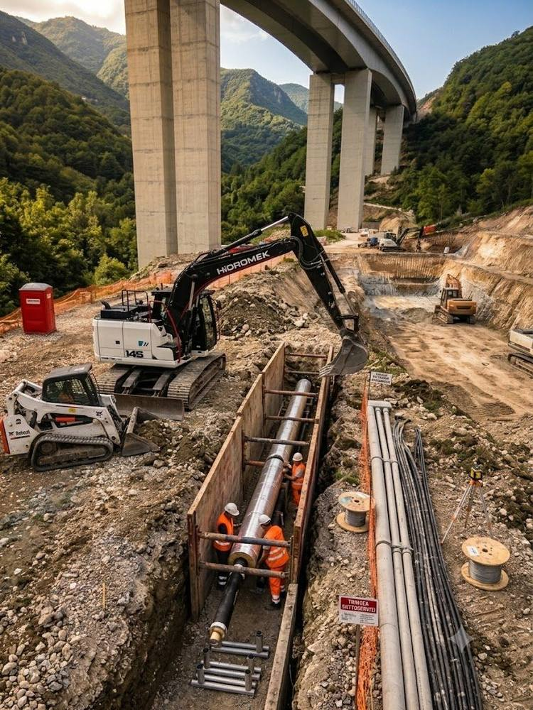
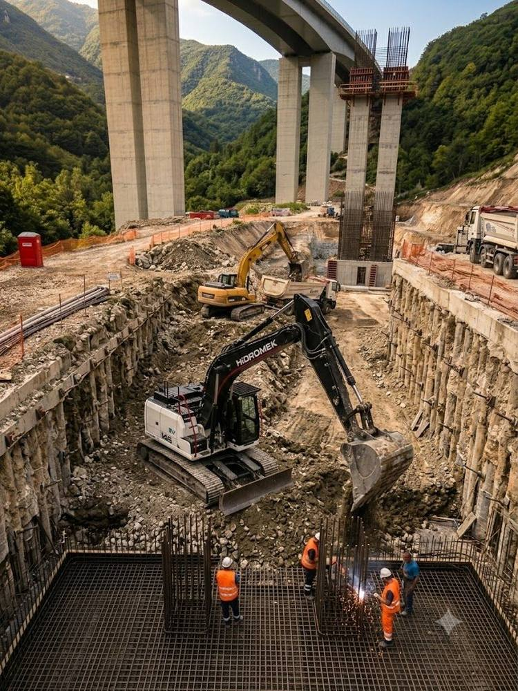

Movimento Terra
Prepariamo il terreno per ogni fase del cantiere: sbancamenti, scavi di fondazione, trincee per sottoservizi e livellamenti di precisione, con gestione a norma delle terre e rocce da scavo.
MOVIMENTO TERRA
Ogni scavo, seguito
dall'inizio alla chiusura.
Interveniamo su cantieri residenziali, industriali e infrastrutturali, con mezzi e operatori propri per ogni fase dello scavo.
Sbancamenti e scavi di fondazione
Rimozione del terreno vegetale e scavo di sbancamento generale, scavi di fondazione per plinti, travi rovesce e platee, con verifica costante di quote e pendenze.
Trincee per sottoservizi
Scavi a sezione obbligata per la posa di condotte idriche, fognarie, gas e cavidotti elettrici, con protezione degli scavi e ripristino del piano stradale.
Livellamenti e regolarizzazione piani
Rimodellazione e livellamento di aree di cantiere, piazzali e sedimi stradali, in preparazione a fondazioni, pavimentazioni o aree di stoccaggio.
Gestione terre e rocce da scavo
Caratterizzazione, trasporto e conferimento del materiale di risulta secondo normativa, con possibilità di riutilizzo in cantiere quando le terre sono idonee.
Anche fuori dal
cantiere edile.
Movimento terra anche per terreni agricoli, aree private e opere di consolidamento.
Sistemazione terreni agricoli
Livellamento, spietramento e sistemazione di terreni agricoli, anche in preparazione a nuovi impianti o cambi di coltura.
Realizzazione strade interpoderali
Apertura e manutenzione di strade interpoderali e piste di accesso a fondi agricoli e cantieri isolati.
Pulizia terreni e boscaglie
Decespugliamento e pulizia di terreni incolti, boscaglie e aree abbandonate, in preparazione a nuovi utilizzi.
Consolidamento terreni e contenimento scarpate
Interventi di consolidamento terreni, palificazioni e contenimento scarpate su terreni in pendenza o instabili.
Scavi seguiti
di recente.
Sostituire con fotografie reali degli scavi eseguiti.

Sbancamento

Trincea sottoservizi

Scavo di fondazione
Sopralluogo, quota,
scavo, verifica.
Ogni intervento inizia con un sopralluogo per definire quote, accessi e tempistiche. Il preventivo indica volumi stimati e mezzi impiegati; a lavori conclusi verifichiamo insieme al direttore lavori la corrispondenza tra scavo eseguito e progetto.
- Sopralluogo tecnico gratuito prima del preventivo
- Mezzi dimensionati sulla reale accessibilità del cantiere
- Documentazione di conferimento per le terre da scavo
- Coordinamento diretto con direzione lavori e altre imprese
Zone servite.
Movimento terra entro circa 100 km da Montesano sulla Marcellana.